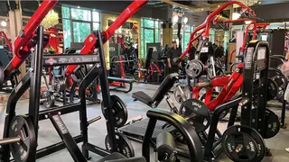
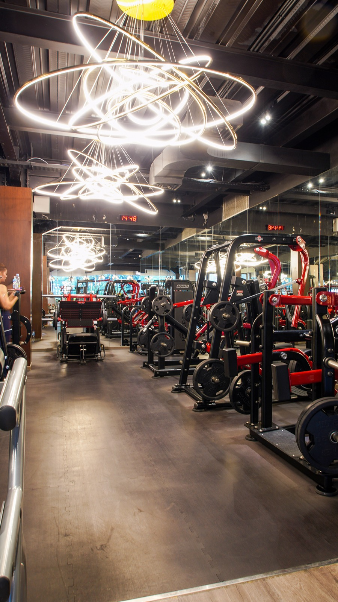
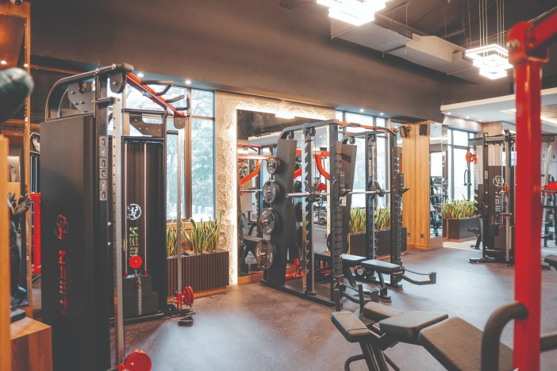

Start Your Fitness Experience With Bull's Fitness
Bergabunglah sekarang dan mulai perjalanan kebugaran Anda!
Lihat Paket MemberKenapa Memilih Bull's Fitness?
Di Bull's Fitness, kami percaya bahwa kekuatan sejati dibangun dengan tekad, bimbingan, dan peralatan yang tepat. Kami mendedikasikan gym kami untuk mereka yang serius ingin bertransformasi. Kami menawarkan fasilitas premium dengan koleksi peralatan strength training dan kardio terlengkap. Didukung oleh tim pelatih elit yang siap memandu setiap langkah Anda, serta komunitas yang suportif, kami menyediakan atmosfer sempurna bagi Anda untuk memecahkan rekor pribadi Anda. Ini bukan gym biasa. Ini adalah tempat Anda menjadi lebih kuat
Kunjungi Cabang Kami
Temukan Bull's Fitness terdekat di kota Anda.

Bull's Fitness - Bekasi
Jl. K.H. Noer Ali No. 177, Kayuringin Jaya, Bekasi Selatan, Kota Bekasi
Lihat Peta
Bull's Fitness - Jakarta
Jl. Jend. Sudirman No. 12, Senayan, Kebayoran Baru, Jakarta Selatan
Lihat Peta